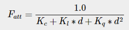
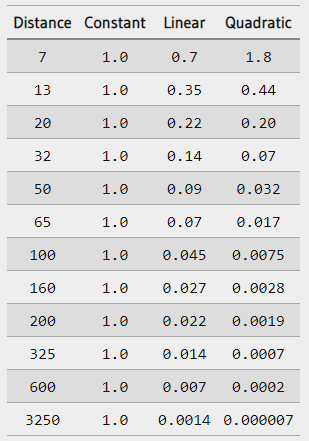
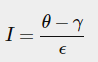
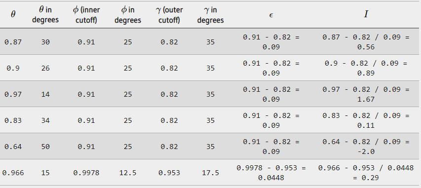

Light casters
All the lighting we've used so far came from a single source that is a single point in space. It gives good results, but in the real world we have several types of light that each act different. A light source that casts light upon objects is called a light caster. In this tutorial we'll discuss several different types of light casters. Learning to simulate different light sources is yet another tool in your toolbox to further enrich your environments.
We'll first discuss a directional light, then a point light which is an extension of what we had before and lastly we'll discuss spotlights. In the next tutorial we'll combine several of these different light types into one scene.
Directional Light
When a light source is far away the light rays coming from the light source are close to parallel to each other. It looks like all the light rays are coming from the same direction, regardless of where the object and/or the viewer is. When a light source is modeled to be infinitely far away it is called a directional light since all its light rays have the same direction; it is independent of the location of the light source.
A fine example of a directional light source is the sun as we know it. The sun is not infinitely far away from us, but it is so far away that we can perceive it as being infinitely far away in the lighting calculations. All the light rays from the sun are then modelled as parallel light rays as we can see in the following image:

Because all the light rays are parallel it does not matter how each object relates to the light source's position since the light direction remains the same for each object in the scene. Because the light's direction vector stays the same, the lighting calculations will be similar for each object in the scene.
We can model such a directional light by defining a light direction vector instead of a position vector. The shader calculations remain mostly the same except this time we directly use the light's direction vector instead of calculating the lightDir vector with the light's position vector:
struct Light {
vec3 direction;
vec3 ambient;
vec3 diffuse;
vec3 specular;
};
//...
void main()
{
vec3 lightDir = normalize(-light.direction);
//...
}
Note that we first negate the light.direction vector. The lighting calculations we used so far expect the light direction to be a direction from the fragment towards the light source, but people generally prefer to specify a directional light as a global direction pointing from the light source. Therefore we have to negate the global light direction vector to switch its direction; it's now a direction vector pointing towards the light source. Also, be sure to normalize the vector since it is unwise to assume the input vector to be a unit vector.
The resulting lightDir vector is then used as before in the diffuse and specular computations.
To clearly demonstrate that a directional light has the same effect on all multiple objects we create multiple cubes, each has their own position so we start by creating an array of positions.
private readonly Vector3[] _cubePositions =
{
new Vector3(0.0f, 0.0f, 0.0f),
new Vector3(2.0f, 5.0f, -15.0f),
new Vector3(-1.5f, -2.2f, -2.5f),
new Vector3(-3.8f, -2.0f, -12.3f),
new Vector3(2.4f, -0.4f, -3.5f),
new Vector3(-1.7f, 3.0f, -7.5f),
new Vector3(1.3f, -2.0f, -2.5f),
new Vector3(1.5f, 2.0f, -2.5f),
new Vector3(1.5f, 0.2f, -1.5f),
new Vector3(-1.3f, 1.0f, -1.5f)
};
for (int i = 0; i < _cubePositions.Length; i++)
{
Matrix4 model = Matrix4.Identity;
model *= Matrix4.CreateTranslation(_cubePositions[i]);
float angle = 20.0f * i;
model *= Matrix4.CreateFromAxisAngle(new Vector3(1.0f, 0.3f, 0.5f), angle);
_lightingShader.SetMatrix4("model", model);
GL.DrawArrays(PrimitiveType.Triangles, 0, 36);
}
Also, don't forget to actually specify the direction of the light source (note that we define the direction as a direction from the light source; you can quickly see the light's direction is pointing downwards):
_lightingShader.SetVector3("light.direction", new Vector3(-0.2f, -1.0f, -0.3f));
We've been passing the light's position and direction vectors as vec3s for a while now, but some people tend to prefer to keep all the vectors defined as vec4. When defining position vectors as a vec4 it is important to set the w component to 1.0 so translation and projections are properly applied. However, when defining a direction vector as a vec4 we don't want translations to have an effect (since they just represent directions, nothing more) so then we define the w component to be 0.0. Direction vectors are then represented like: vec4(0.2f, 1.0f, 0.3f, 0.0f). This can also function as an easy check for light types: you could check if the w component is equal to 1.0 to see that we now have a light's position vector and if w is equal to 0.0 we have a light's direction vector so adjust the calculations based on that. Fun fact: this is actually how the old OpenGL (fixed-functionality) determined if a light source was a directional light or a positional light source and adjusted its lighting based on that.
if(lightVector.w == 0.0) // note: be careful for floating point errors
// do directional light calculations
else if(lightVector.w == 1.0)
// do light calculations using the light's position (like last tutorial)
If you'd now compile the application and fly through the scene it looks like there is a sun-like light source casting light on all the objects. Can you see that the diffuse and specular components all react as if there was a light source somewhere in the sky? It'll look something like this:

You can find the full source code of the application here.
Point lights
Directional lights are great for global lights that illuminate the entire scene, but aside from a directional light we usually also want several point lights scattered throughout the scene. A point light is a light source with a given position somewhere in a world that illuminates in all directions where the light rays fade out over distance. Think of light bulbs and torches as light casters that act as a point light.

In the earlier tutorials we've been working with a (simplistic) point light all along. We had a light source at a given position that scatters light in all directions from that given light position. However, the light source we defined simulated light rays that never fade out thus making it look like the light source is extremely strong. In most 3D simulations we'd like to simulate a light source that only illuminates a certain area close to the light source and not the entire scene.
If you'd add the 10 containers to the lighting scene of the previous tutorial you'd notice that the container all the way in the back is lit with the same intensity as the container in front of the lamp; there is no formula defined that diminishes light over distance. We want the container in the back to only be slightly lit in comparison to the containers close to the light source.
Attenuation
To reduce the intensity of light, over the distance a light ray travels, is generally called attenuation. One way to reduce the light intensity over distance is to simply use a linear equation. Such an equation would linearly reduce the light intensity over the distance thus making sure that objects at a distance are less bright. However, such a linear function tends to look a bit fake. In the real world, lights are generally quite bright standing close by, but the brightness of a light source diminishes quickly at the start and the remaining light intensity more slowly diminishes over distance. We are thus in need of a different formula for reducing the light's intensity.
Luckily some smart people already figured this out for us. The following formula calculates an attenuation value based on a fragment's distance to the light source which we later multiply with the light's intensity vector:

Here d represents the distance from the fragment to the light source. Then to calculate the attenuation value we define 3 (configurable) terms: a constant term Kc, a linear term Kl and a quadratic term Kq.
- The constant term is usually kept at 1.0 which is mainly there to make sure the resulting denominator never gets smaller than 1 since it would otherwise boost the intensity with certain distances, which is not the effect we're looking for.
- The linear term is multiplied with the distance value that reduces the intensity in a linear fashion.
- The quadratic term is multiplied with the quadrant of the distance and sets a quadratic decrease of intensity for the light source. The quadratic term will be less significant compared to the linear term when the distance is small, but gets much larger than the linear term as the distance grows.
Due to the quadratic term the light will diminish mostly at a linear fashion until the distance becomes large enough for the quadratic term to surpass the linear term and then the light intensity will decrease a lot faster. The resulting effect is that the light is quite intense when at a close range, but quickly loses it brightness over distance and eventually loses its brightness at a more slower pace. The following graph shows the effect such an attenuation has over a distance of 100:

You can see that the light has the highest intensity when the distance is small, but as soon as the distance grows its intensity is significantly reduced and slowly reaches 0 intensity at around a distance of 100. This is exactly what we want.
Choosing the right values
But at what values do we set those 3 terms? Setting the right values depends on many factors: the environment, the distance you want a light to cover, the type of light etc. In most cases, it simply is a question of experience and a moderate amount of tweaking. The following table shows some of the values these terms could take to simulate a realistic (sort of) light source that covers a specific radius (distance). The first column specifies the distance a light will cover with the given terms. These values are good starting points for most lights, with courtesy of Ogre3D's wiki:

As you can see, the constant term Kc is kept at 1.0 in all cases. The linear term Kl is usually quite small to cover larger distances and the quadratic term Kq is even smaller. Try to experiment a bit with these values to see their effect in your implementation. In our environment a distance of 32 to 100 is generally enough for most lights.
Implementing attenuation
To implement attenuation we'll be needing 3 extra values in the fragment shader: namely the constant, linear and quadratic terms of the formula. These are best stored in the Light struct we defined earlier. Note that we calculate lightDir as we did in the previous tutorial and not as in the earlier Directional Light section.
struct Light {
vec3 position;
vec3 ambient;
vec3 diffuse;
vec3 specular;
float constant;
float linear;
float quadratic;
};
Then we set the terms in OpenGL: we want the light to cover a distance of 50 so we'll use the appropriate constant, linear and quadratic terms from the table:
_lightingShader.SetFloat("light.constant", 1.0f);
_lightingShader.SetFloat("light.linear", 0.09f);
_lightingShader.SetFloat("light.quadratic", 0.032f);
Implementing attenuation in the fragment shader is relatively straightforward: we simply calculate an attenuation value based on the formula and multiply this with the ambient, diffuse and specular components.
We do need the distance to the light source for the formula to work though; remember how we can calculate the length of a vector? We can retrieve the distance term by retrieving the difference vector between the fragment and the light source and take the resulting vector's length. We can use GLSL's built-in length function for that purpose:
float distance = length(light.position - FragPos);
float attenuation = 1.0 / (light.constant + light.linear * distance + light.quadratic * (distance * distance));
Then we include this attenuation value in the lighting calculations by multiplying the attenuation value with the ambient, diffuse and specular colors.
We could leave the ambient component alone so ambient lighting is not decreased over distance, but if we were to use more than 1 light source all the ambient components will start to stack up so in that case we want to attenuate ambient lighting as well. Simply play around with what's best for your environment.
ambient *= attenuation;
diffuse *= attenuation;
specular *= attenuation;
If you'd run the application you'd get something like this:

You can see that right now only the front containers are lit with the closest container being the brightest. The containers in the back are not lit at all since they're too far from the light source. You can find the source code of the application here.
A point light is thus a light source with a configurable location and attenuation applied to its lighting calculations. Yet another type of light for our lighting arsenal.
Spotlight
The last type of light we're going to discuss is a spotlight. A spotlight is a light source that is located somewhere in the environment that, instead of shooting light rays in all directions, only shoots them in a specific direction. The result is that only the objects within a certain radius of the spotlight's direction are lit and everything else stays dark. A good example of a spotlight would be a street lamp or a flashlight.
A spotlight in OpenGL is represented by a world-space position, a direction and a cutoff angle that specifies the radius of the spotlight. For each fragment we calculate if the fragment is between the spotlight's cutoff directions (thus in its cone) and if so, we lit the fragment accordingly. The following image gives you an idea of how a spotlight works:

- LightDir: the vector pointing from the fragment to the light source.
- SpotDir: the direction the spotlight is aiming at.
- Phi ϕ: the cutoff angle that specifies the spotlight's radius. Everything outside this angle is not lit by the spotlight.
- Theta θ: the angle between the LightDir vector and the SpotDir vector. The θ value should be smaller than the Φ value to be inside the spotlight.
So what we basically need to do, is calculate the dot product (returns the cosine of the angle between two unit vectors remember?) between the LightDir vector and the SpotDir vector and compare this with the cutoff angle ϕ. Now that you (sort of) understand what a spotlight is all about we're going to create one in the form of a flashlight.
Flashlight
A flashlight is a spotlight located at the viewer's position and usually aimed straight ahead from the player's perspective. Basically a flashlight is a normal spotlight, but with its position and direction continually updated based on the player's position and orientation.
So, the values we're going to need for the fragment shader are the spotlight's position vector (to calculate the light's direction vector), the spotlight's direction vector and the cutoff angle. We can store these values in the Light struct:
struct Light {
vec3 position;
vec3 direction;
float cutOff;
//...
};
Next we pass the appropriate values to the shaders:
_lightingShader.SetVector3("light.position", _camera.Position);
_lightingShader.SetVector3("light.direction", _camera.Front);
_lightingShader.SetFloat("light.cutOff", (float)Math.Cos(MathHelper.DegreesToRadians(12.5)));
As you can see we're not setting an angle for the cutoff value but calculate the cosine value based on an angle and pass the cosine result to the fragment shader. The reason for this is that in the fragment shader we're calculating the dot product between the LightDir and the SpotDir vector and the dot product returns a cosine value and not an angle so we can't directly compare an angle with a cosine value. To retrieve the angle we then have to calculate the inverse cosine of the dot product's result which is an expensive operation. So to save some performance we calculate the cosine value of a given cutoff angle and pass this result to the fragment shader. Since both angles are now represented as cosines, we can directly compare between them without any expensive operations.
Now what's left to do is calculate the theta θ value and compare this with the cutoff ϕ value to determine if we're in or outside the spotlight:
vec3 lightDir = normalize(light.position - FragPos);
float theta = dot(lightDir, normalize(-light.direction));
if(theta > light.cutOff)
{
// do lighting calculations
}
else
{
// else, use ambient light so scene isn't completely dark outside the spotlight.
FragColor = vec4(light.ambient * vec3(texture(material.diffuse, TexCoords)), 1.0);
}
We first calculate the dot product between the lightDir vector and the negated direction vector (negated, because we want the vectors to point towards the light source, instead of from). Be sure to normalize all the relevant vectors.
You might be wondering why there is a > sign instead of a < sign in the if guard. Shouldn't theta be smaller than the light's cutoff value to be inside the spotlight? That is right, but don't forget angle values are represented as cosine values and an angle of 0 is represented as the cosine value of 1.0 while an angle of 90 degrees is represented as the cosine value of 0.0 as you can see here:

You can now see that the closer the cosine value is to 1.0 the smaller its angle. Now it makes sense why theta needs to be larger than the cutoff value. The cutoff value is currently set at the cosine of 12.5 which is equal to 0.9978 so a cosine theta value between 0.9979 and 1.0 would result in the fragment being lit as inside the spotlight.
Running the application results in a spotlight that only lights the fragments that are directly inside the cone of the spotlight. It'll look something like this:

It still looks a bit fake though, mostly because the spotlight has hard edges. Wherever a fragment reaches the edge of the spotlight's cone it is shut down completely instead of with a nice smooth fade. A realistic spotlight would reduce the light gradually around its edges.
Smooth/Soft edges
To create the effect of a smoothly-edged spotlight we want to simulate a spotlight having an inner and an outer cone. We can set the inner cone as the cone defined in the previous section, but we also want an outer cone that gradually dims the light from the inner to the edges of the outer cone.
To create an outer cone we simply define another cosine value that represents the angle between the spotlight's direction vector and the outer cone's vector (equal to its radius). Then, if a fragment is between the inner and the outer cone it should calculate an intensity value between 0.0 and 1.0. If the fragment is inside the inner cone its intensity is equal to 1.0 and 0.0 if the fragment is outside the outer cone.
We can calculate such a value using the following formula:

Here ϵ (epsilon) is the cosine difference between the inner (ϕ) and the outer cone (γ) (ϵ=ϕ−γ). The resulting I value is then the intensity of the spotlight at the current fragment.
It is a bit hard to visualize how this formula actually works so let's try it out with a few sample values:

As you can see we're basically interpolating between the outer cosine and the inner cosine based on the θ value. If you still don't really see what's going on, don't worry, you can simply take the formula for granted and return here when you're much older and wiser.
Since we now have an intensity value that is either negative when outside the spotlight, higher than 1.0 when inside the inner cone and somewhere in between around the edges. If we properly clamp the values we don't need an if-else in the fragment shader anymore and we can simply multiply the light components with the calculated intensity value:
float theta = dot(lightDir, normalize(-light.direction));
float epsilon = light.cutOff - light.outerCutOff;
float intensity = clamp((theta - light.outerCutOff) / epsilon, 0.0, 1.0);
//...
// we'll leave ambient unaffected so we always have a little light.
diffuse *= intensity;
specular *= intensity;
//...
Note that we use the clamp function that clamps its first argument between the values 0.0 and 1.0. This makes sure the intensity values won't end up outside the [0, 1] interval.
Make sure you add the outerCutOff value to the Light struct and set its uniform value in the application. For the following image an inner cutoff angle of 12.5 and an outer cutoff angle of 17.5 was used:

Ahhh, that's much better. Play around with the inner and outer cutoff angles and try to create a spotlight that better suits your needs. You can find the source code of the application here.
Such a flashlight/spotlight type of lamp is perfect for horror games and combined with directional and point lights the environment will really start to light up. In the next tutorial we'll combine all the lights and tricks we've discussed so far.